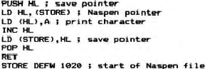

Nascom Newsletter |
Volume 3 · Numbers 5 & 6 · June 1984 |
| Page 41 of 69 |
|---|
arguments has been entered to save crashing the program. After that, the characters are copied from source code to Naspen file with checks for the end of each line, where the 1FH marker is changed to 0DH for Naspen. TBCD3 is then used to put the line number on the screen in ASCII which is then copied into the Naspen file, together with its space to give a correct presentation.
At the end of the source code the Naspen 20H and FFH markers are added, the address of the end of text put in the Naspen store at 101A and then Naspen ware started. You can then use the editing facilities of Naspen either to add comments or to move large blocks around.
When you have finished, leave Naspen and use the second program to copy the text back to the source area for the assembler.
Type E D50 XXXX to start. XXXX is the address of the source area start address and after another check of the number of arguments, the program starts by missing out the first three bytes of the Naspen file. The reason for this is that the ASCII representation of the line number takes four bytes, while the number itself is stored as two bytes. The third byte to be omitted is the extra space inserted for presentation in the previous program. Each character is then copied across in sequence until a CR is found. This is changed to 1FH for the assembler and again the first three bytes of the next line are omitted. When the end of text marker, FFH, is found, the screen is cleared and the end of source code address and renumber command put on the screen so that, as soon as the assembler is entered, pressing Newline twice will set all the parameters of the assembler.
Should you wish to edit a listing, replace the print reflection with this short program so that it prints its output into your Naspen file. One word of warning, it romps through memory at a very high rate of knots so make sure that you have lots available, you may also need to reset the limit address at 1012.

There are only eleven bytes to that routine but very useful ones. Don’t forget to set 1020 in the store or your listing could be anywhere.
| Page 41 of 69 |
|---|